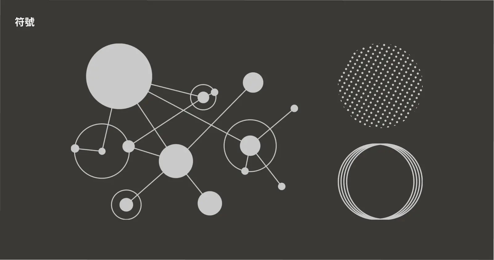
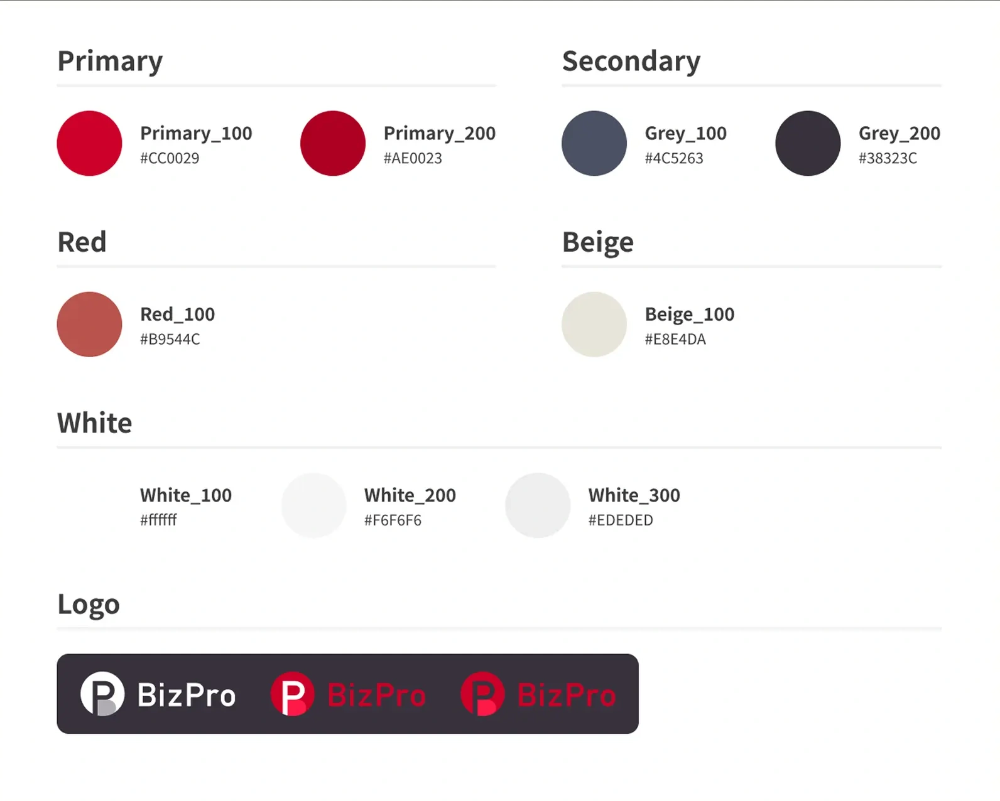
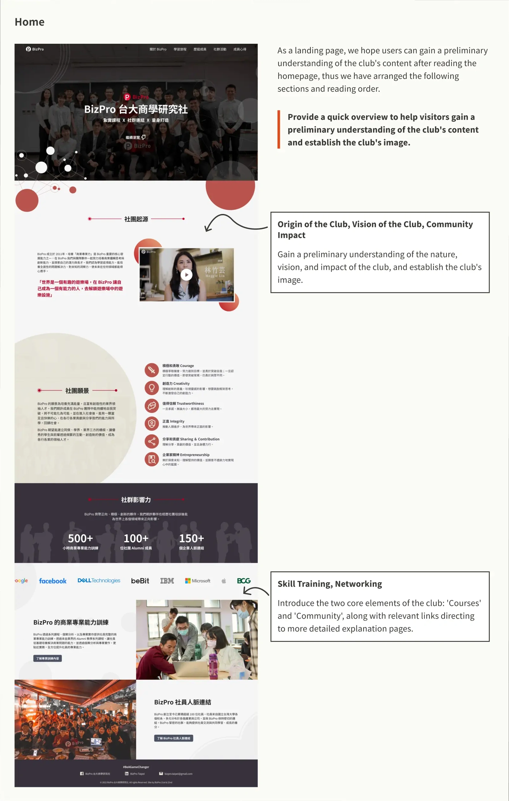
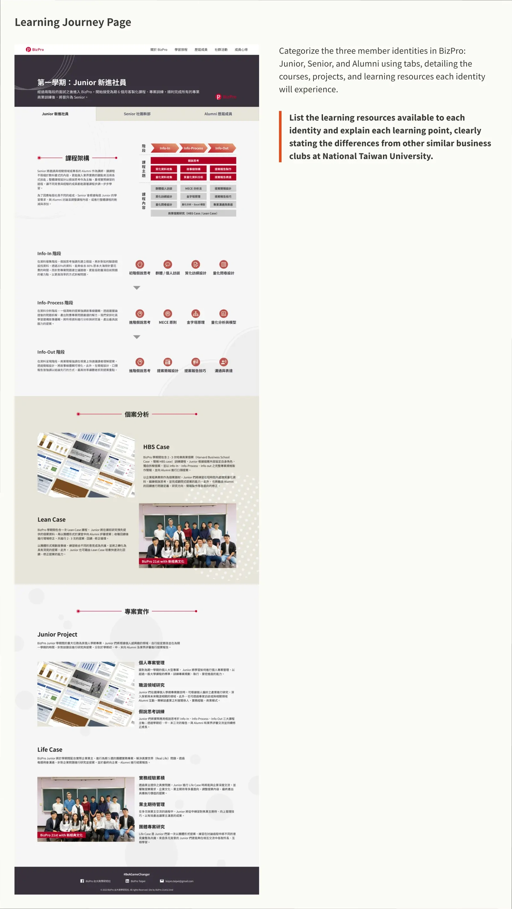
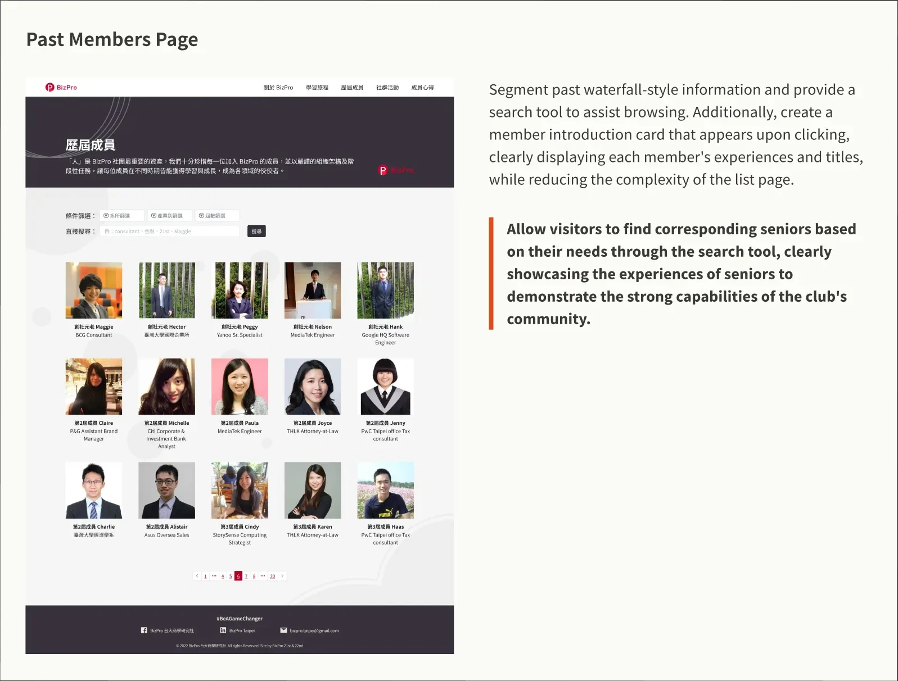
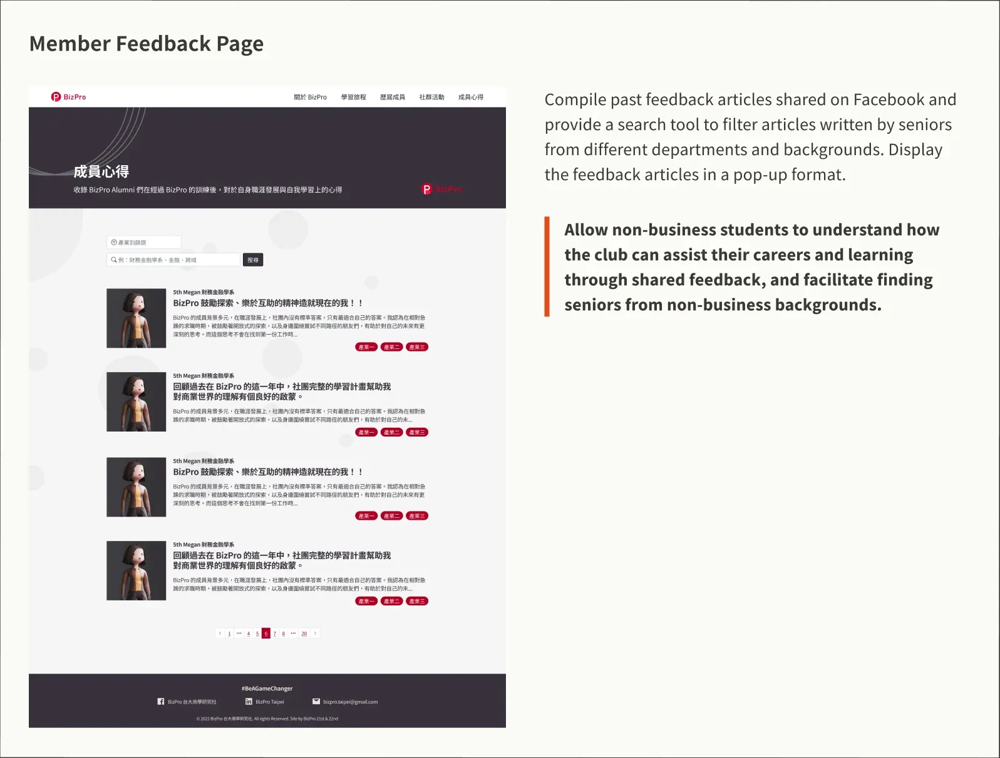

BizPro - Club Official Website Design and Development
Project Background
This website redesign for BizPro, the NTU Business Research Club, was my personal initiative as a club officer. Since its launch in 2014, the site had become outdated due to the club's growth and curriculum changes. Its single-page design made the alumni list overly long, affecting readability. As more business clubs emerged at NTU, emphasizing BizPro's unique value and curriculum became increasingly important.
Visual Design
Symbol: Emphasizing the concept of community connection.
BizPro is a club that centers around community connections as its core strength. To reflect this, interconnected dots were used as a symbol of member connections, which further inspired design elements such as overlapping rings and dotted patterns.
The color scheme is based on BizPro's signature red as the primary color, complemented by gray and white as the dominant tones for a balanced visual presentation.


Outcome
Based on the information needs of two user groups, I defined four key pillars to guide the website's content and structure:
- How can we highlight the strong backgrounds of past members?
- How can we showcase the advantage of concentrated resources for new members?
- How can we help students experience the club's benefits as if firsthand?
- How can we emphasize the club's identity as a community built on interactions?
Front Stage




Backstage
Since the website requires semesterly updates for alumni records and member reflections, a backend system was developed to streamline data management and facilitate officer transitions.


Design System Architecture Design and Organization